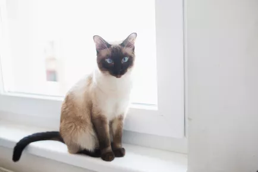
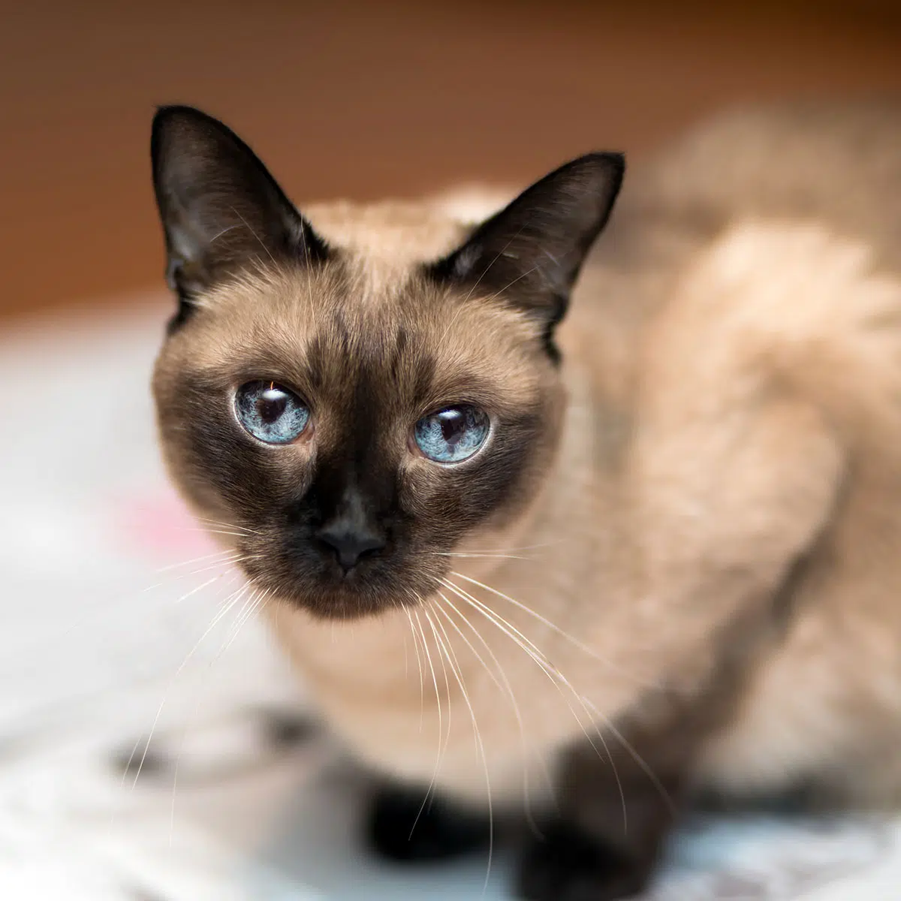
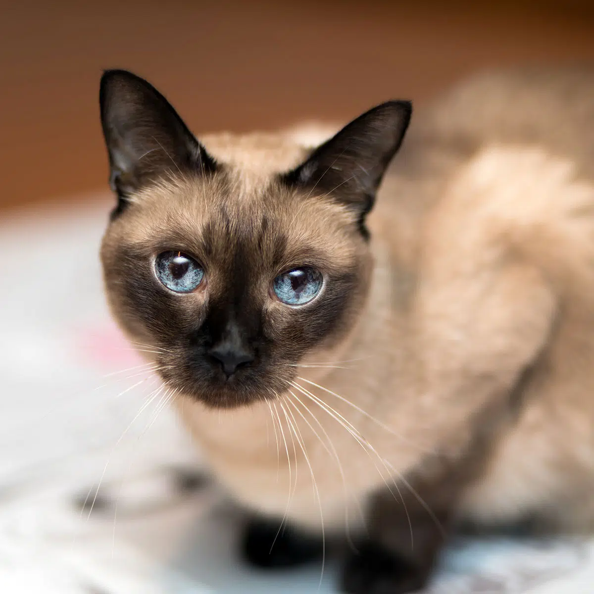
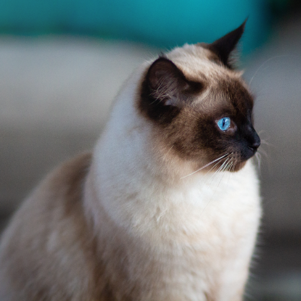
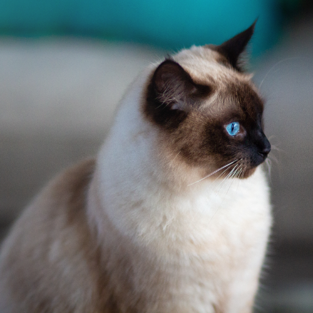
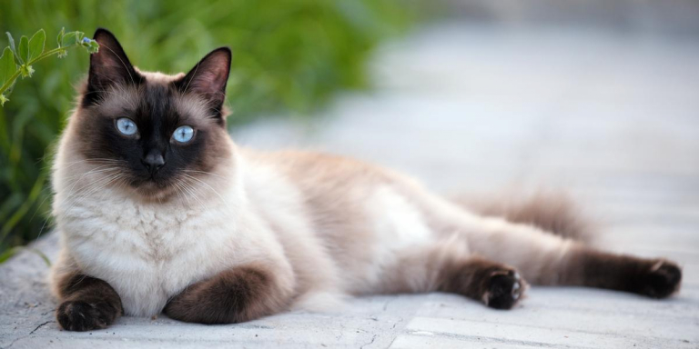

Jovana Rikalo / Stocksy UnitedPopular since the 19th century, this cat breed originated in Thailand (formerly known as Siam). The Siamese has been a foundational breed for the Oriental shorthair, sphynx, and Himalayan. Most Siamese cats have distinct markings called "points" that are the areas of coloration on their face, ears, feet, and tail. Two varieties of Siamese cats have an "apple" shaped head and chubbier body and the other features a larger head and slender body. The animated Disney film "Lady and the Tramp" featured Siamese cats singing a song, demonstrating their intelligence and vocal skills. Many Siamese cats that originated from Thailand had a kink in their tail—a trait bred out of most Siamese, but you can still see it in street cats in Thailand.
Breed Overview
HEIGHT: Up to 14 inches
WEIGHT 5 to 8 pounds
COAT AND COLOR: Short coat in seal, chocolate, blue, and lilac with blue eyes
LIFE EXPECTANCY: 12 to 15 years
more image:
 
 
 